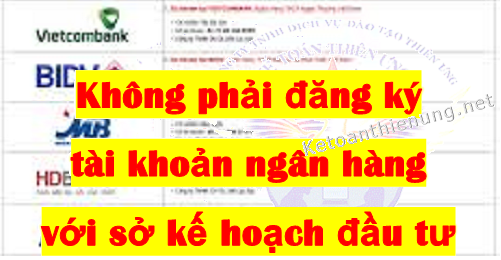
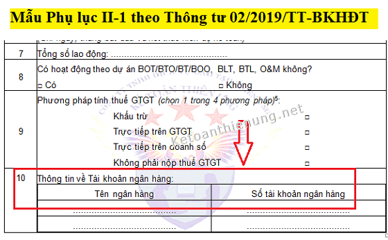
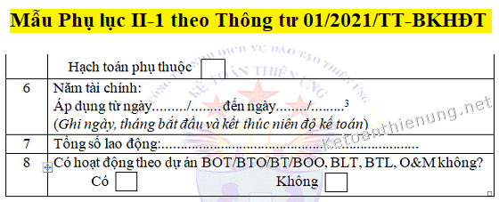

Không phải đăng ký Tài khoản Ngân hàng với Sở kế hoạch đầu tư -> DN vẫn được khấu trừ thuế GTGT đầu vào. Nhưng vẫn phải đăng ký tài khoản ngân hàng với Cơ quan thuế (áp dụng từ ngày 1/5/2021).
Bài viết này Kế toán Diệu Tâm xin trích các văn bản quy định về việc đăng ký tài khoản ngân hàng với cơ quan chức năng như:
- Khi Doanh nghiệp mở, thay đổi tài khoản ngân hàng có phải đăng ký tài khoản ngân hàng với sở kế hoạch đầu tư (Phòng đăng ký kinh doanh) hay có phải đăng ký tài khoản ngân hàng với cơ quan thuế không?
- Nếu không đăng ký (thông báo) thì có bị phạt không? Những khoản phát sinh qua tài khoản đó có được khấu trừ thuế GTGT, có được đưa vào chi phí hợp lý khi tính thuế TNDN.
=> Cụ thể theo từng thời điểm như sau:
----------------------------------------------------------------------
Trước ngày 15/12/2016:
- Theo khoản 6 Điều 3 Thông tư 119/2014/TT-BTC sửa đổi, bổ sung Thông tư 219:
“3. Chứng từ thanh toán qua ngân hàng được hiểu là có chứng từ chứng minh việc chuyển tiền từ tài khoản của bên mua sang tài khoản của bên bán (tài khoản của bên mua và tài khoản của bên bán phải là tài khoản đã đăng ký hoặc thông báo với cơ quan thuế. Bên mua không cần phải đăng ký hoặc thông báo với cơ quan thuế tài khoản tiền vay tại các tổ chức tín dụng dùng để thanh toán cho nhà cung cấp) mở tại các tổ chức cung ứng dịch vụ thanh toán theo các hình thức thanh toán phù hợp với quy định của pháp luật hiện hành như séc, uỷ nhiệm chi hoặc lệnh chi, uỷ nhiệm thu, nhờ thu, thẻ ngân hàng, thẻ tín dụng, sim điện thoại (ví điện tử) và các hình thức thanh toán khác theo quy định (bao gồm cả trường hợp bên mua thanh toán từ tài khoản của bên mua sang tài khoản bên bán mang tên chủ doanh nghiệp tư nhân hoặc bên mua thanh toán từ tài khoản của bên mua mang tên chủ doanh nghiệp tư nhân sang tài khoản bên bán nếu tài khoản này đã được đăng ký giao dịch với cơ quan thuế).”
---------------------------------------------------------------------------------
Từ ngày 15/12/2016 trở đi:- Theo Điều 1 Thông tư 173/2016/TT-BTC:
“3. Chứng từ thanh toán qua ngân hàng được hiểu là có chứng từ chứng minh việc chuyển tiền từ tài khoản của bên mua sang tài khoản của bên bán mở tại các tổ chức cung ứng dịch vụ thanh toán theo các hình thức thanh toán phù hợp với quy định của pháp luật hiện hành như séc, uỷ nhiệm chi hoặc lệnh chi, uỷ nhiệm thu, nhờ thu, thẻ ngân hàng, thẻ tín dụng, sim điện thoại (ví điện tử) và các hình thức thanh toán khác theo quy định (bao gồm cả trường hợp bên mua thanh toán từ tài khoản của bên mua sang tài khoản bên bán mang tên chủ doanh nghiệp tư nhân hoặc bên mua thanh toán từ tài khoản của bên mua mang tên chủ doanh nghiệp tư nhân sang tài khoản bên bán).”
----------------------------------------------------------
NHƯ VẬY: Tài khoản Ngân hàng của DN mà không đăng ký với Cơ quan thuế hoặc Sở kế hoạch đầu tư thì vẫn được khấu trừ thuế GTGT đầu vào.

----------------------------------------------------------------------------------------------
- > Tức là DN bạn có phát sinh giao dịch qua Tài khoản ngân hàng chưa đăng ký (thông báo) thì vẫn được khấu trừ thuế GTGT đầu vào.
- Còn việc đăng ký Tài khoản ngân hàng với Sở kế hoạch đầu tư hoặc đăng ký với Cơ quan thuế được quy định như sau:
---------------------------------------------------------------
2. Đăng ký tài khoản ngân hàng với Sở kế hoạch đầu tư, Cơ quan thuế:
Trước ngày 01/05/2021:
Theo Thông tư 20/2015/TT-BKHĐT và Thông tư 02/2019/TT-BKHĐT:
- Trên Giấy đề nghị đăng ký thành lập Doanh nghiệp (có mục “Thông tin đăng ký thuế”) và trên Giấy Thông báo thay đổi nội dung đăng ký doanh nghiệp (có mục “ Thông báo thay đổi thông tin đăng ký thuế”) => Trên 2 mẫu biểu đó có mục Thông tin về Tài khoản ngân hàng.

------------------------------------------------------------------------
- Thì Thông tư số 01/2021/TT-BKHĐT (Thông tư này thay thế Thông tư số 20/2015/TT-BKHĐT và Thông tư số 02/2019/TT-BKHĐT nêu trên).
Cụ thể là trên Mẫu biểu Phụ lục II-1 Thông báo Thay đổi nội dung đăng ký doanh nghiệp ban hành kèm theo Thông tư 01/2021/TT-BKHĐT -> Mục “Thông báo thay đổi thông tin đăng ký thuế” => Đã không còn mục “Thông tin về Tài khoản ngân hàng”.

=> Như vậy: Từ ngày 01/5/2021 khi mở TKNH hoặc thay đổi tài khoản ngân hàng => Thì DN không phải đăng ký tài khoản ngân hàng với sở kế hoạch đầu tư nữa.
----------------------------------------------------------------------------
Vậy có phải đăng ký tài khoản ngân hàng với Cơ quan thuế?
- Hiện tại thì chưa có văn bản cụ thể quy định về việc đăng ký tài khoản ngân hàng với cơ quan thuế như nào, nhưng:
-> Có Chi cục Thuế thì yêu cầu nộp Mẫu 08/MST tại Bộ phận một cửa (Thời hạn 10 ngày). Có Chi cục Thuế thì lại bảo không cần nộp.
-> Có chi cục Thuế hướng dẫn "Doanh nghiệp thông báo tài khoản ngân hàng mới trên ETAX giống như đăng ký nộp thuế điện tử - đủ 2 bước"
Chi tiết về việc "Đăng ký nộp thuế điện tử" các bạn có thể xem thêm hướng dẫn tại đây: Cách đăng ký nộp thuế điện tử.
=> Khi nào có văn bản hướng dẫn cụ thể, Kế toán Diệu Tâm sẽ chia sẻ trên bài viết này để các bạn cập nhật nhé.
------------------------------------------------------------------------------------------------
Kế toán Diệu Tâm xin chúc các bạn thành công!
----------------------------------------------------------------------------------------------------